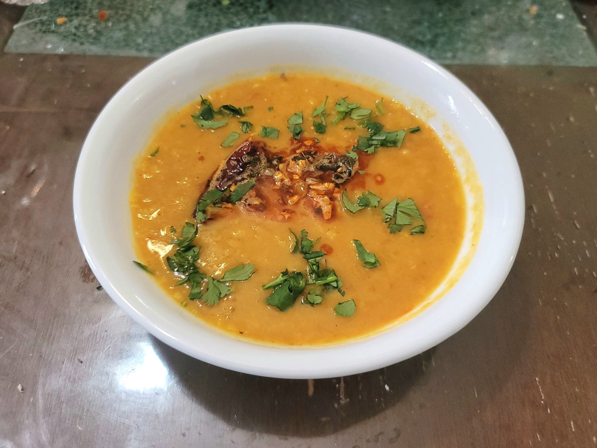

Dal Tadka

Ingredients:
Dal:
- 1 cup Toor dal or 1/2 cup Toor dal + 1/2 cup Masoor dal
- 4-5 cups Water, or 2 1/2 cups Water if pressure cooking
- 2 Green chilies or Serranos, slit
- 1 Onion, diced
- 2 medium Tomatoes, diced
- 1 tsp Ginger, minced
- 1/2 tsp Turmeric
- 1/2 tsp Garam Masala
- Optional: 1/8 tsp Asafoetida (Hing)
- Salt, to taste
- Optional: 1-2 tbsp Light cream
- 1/4 bunch Cilantro, chopped
Tadka:
- 3 tbsp Ghee or Oil
- 1 tsp Cumin seeds
- 6 cloves Garlic
- 2-3 Dried chilies, seeds removed
- Optional: 1/8 tsp Asafoetida (Hing)
- 1 tsp Kasuri methi (Dried fenugreek leaves)
- 1/2 tsp Kashmiri chili powder
Instructions:
- Rinse the lentils until the water runs clean. Then soak them in water for at least 2 hours if cooking in a pot or at least 40 minutes if pressure cooking.
- Strain the lentils from the water and place into a pot or pressure cooker. Add 4-5 cups water or 2 1/2 cups water if pressure cooking. Then add in the chilies, onion, tomatoes, ginger, and turmeric. Bring to a boil and cook the lentils over high heat until soft and creamy, about 45-60 minutes stirring occasionally if in a pot or for 7-8 whistles if pressure cooking. Add water as needed.
- Once the lentils have reached a desired consistency, mash the lentils with either a potato masher or by agressively whisking with a whisk. Add more water if desired. Let simmer for 3-4 more minutes.
- Stir in the light cream, garam masala, and chopped cilantro and salt to taste. Then remove from the heat.
- For the tadka, heat the ghee or oil in a small saucepan over medium-low heat. Add cumin and let fry until crackling and fragrant, about 30-60 seconds. Then add the chilies, garlic, and asafoetida. Fry until the garlic starts to brown, about 1-2 minutes.
- Add in the kasuri methi and kashmiri chili powder. Stir to combine and then remove from heat. Pour the tadka into the dal. Stir to combine and serve hot.